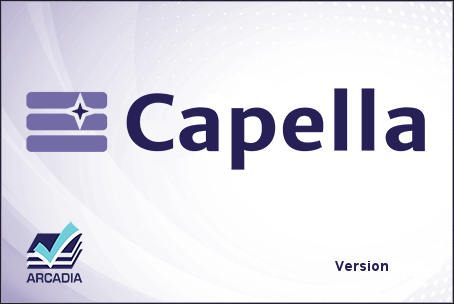

Global Information
Capella 1.1.1 was released in March 2017.A Java 7 JRE/JDK is recommended for Capella 1.1.1.
Get Started with Capella
This sections guides the end-user through the use of Capella.
Samples examples of Capella projects are provided to familiarize yourself with the concepts manipulated
in Capella, the different engineering phases of Arcadia, and the good practices on how to model your
system of interest through efficient means and ergonomic facilities.
Then, please read through this guide that provides instructions for installing Capella.
Extensions for Capella
Some add-ons to Capella can be installed to provide additional features (team work, documentation generation, etc).
The wiki has also a dedicated section for the addons and viewpoints for Capella and their installation.
Support
If you need help about the Capella workbench, you can post questions on the forum or contact professional experts.
In-Flight Entertainment System (IFE)
The Capella IFE sample model is an overly simplified vision of
what a real in-flight entertainment system is. It is partial and
mainly designed for educational purposes.
For any
question about the model (tool- or method-related), please post a
question in the forum.
The model is available for download
here.
Quick reading guidelines: 2 pages giving a reading path through
diagrams

Highlights:
A set of 75 slides with tool and method tips and tricks

Alarm Clock
The Alarm Clock sample model is a set of slides illustrating
precisely, step-by-step, how to use Capella to build a model. At
this stage, it describes Operational Anlaysis, System Need
Analysis and Logical Architecture.
For any
tool-related question about the model, please use the Capella Forum
or consult the PRFC website.
The model is available for download
here.
Highlights:
A set of 45 slides with tool and method tips and tricks

Note:
French translations of the Alarm Clock sample
documentation
and associated Capella
model
are also available.